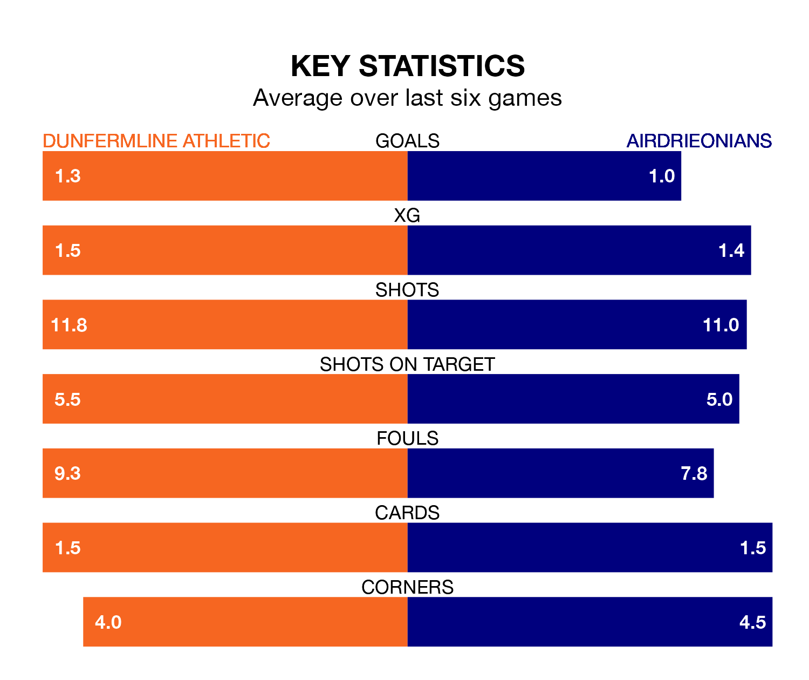

Two of Scottish Championship's meanest defences go head-to-head at KDM Group East End Park on Saturday, when Airdrieonians visit Dunfermline Athletic.
Only one side – Dundee United – has conceded fewer goals than Airdrieonians to date: the away side have let in just 23 goals in 20 games.
Dunfermline have conceded 24 goals in 19 games, giving them the joint-third tightest back line so far this season.
Key to Airdrieonians's home form has been Joshua Rae, who has allowed one goal past him per 90 minutes, compared to 1.13 for Deniz Mehmet in the opposite net.
In the last 10 years, Dunfermline and Airdrieonians have played each other on 16 occasions. Dunfermline won five of them, Airdrieonians six, and they drew five times.
On average, Dunfermline scored 1.4 goals and Airdrieonians 1.5 in those matches.
Their last meeting was on December 9, when Dunfermline won 2-1 away.
Dunfermline are in disappointing form in Scottish Championship, with one win and two draws from their last six games.
With three wins and a draw over that period, Airdrieonians's form is better – they have taken 10 points from 18, compared to Athletic's five.
The away team are fourth in the table after 20 games, of which they have won eight and drawn three, earning 27 points.
The hosts are two places behind Airdrieonians in sixth, with six wins and five draws putting them on 23 points.
Dunfermline's last match was on January 5, a 2-1 loss against Queen's Park, with Ben Summers getting the goal for Dunfermline.
Airdrieonians beat Raith Rovers 1-0 last time out, on January 6, with Nikolay Todorov on the scoresheet.
Updated: 15:34, 08/01/24